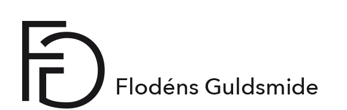

Vad vill du uttrycka?
Vad vill du uttrycka?
Alla är vi unika vilket jag tycker att vi ska ta tillvara på. Att få skapa ett unikt smycke med känsla får då ett större värde för dig som bär det. Du kan få vara med och utforma din vigselring som symboliserar eran kärlek till varandra. Eller att få ge ett unikt smycke till din käraste eller till ditt nyfödda barn. Vackra ting skapade för hand av mig
Charlotta och min man Gustav Flodén, vi kan skapa ditt personliga smycke för du är unik.